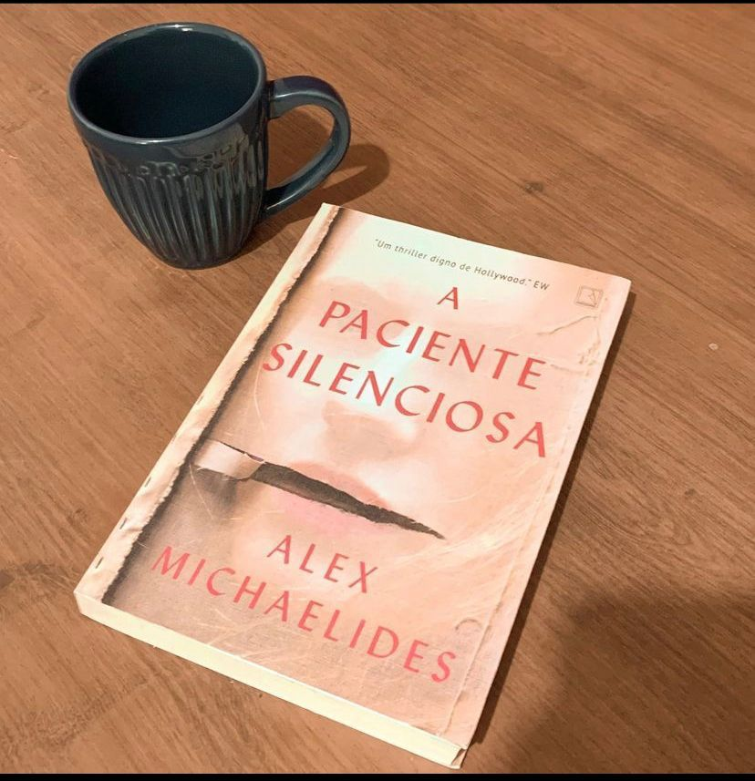

A Paciente Silenciosa
Alicia Berenson tinha uma vida perfeita. Ela era uma pintora famosa casada com um fotógrafo bem-sucedido e morava numa área nobre de Londres que dá para o parque de Hampstead Heath. Certa noite, Gabriel, seu marido, voltou tarde para casa depois de um ensaio para a Vogue, e de repente a vida de Alicia mudou completamente...Alicia tinha 33 anos quando deu cinco tiros no rosto do marido, e ela nunca mais disse uma palavra.A recusa de Alicia a falar ou a dar qualquer explicação transforma essa tragédia doméstica em algo muito maior - um mistério que atrai a atenção do público e aumenta ainda mais a fama da pintora. Entretanto, enquanto seus quadros passam a ser mais valorizados que nunca, ela é levada para o Grove, um hospital psiquiátrico judiciário na zona norte de Londres.Enquanto isso, Theo Faber é um psicoterapeuta forense que espera há muito tempo por uma oportunidade de trabalhar com Alicia. Ele tem certeza de que é a pessoa certa para lidar com o caso. No entanto, sua determinação para fazê-la falar e desvendar o mistério de por que ela atirou no marido o arrasta para um caminho tortuoso que sugere que as raízes do silêncio de Alicia são muito mais profundas do que ele jamais poderia imaginar.
Esse é um daqueles Thrillers que tem a premissa maravilhosa e temos que dar créditos a Alex Michaelides pela criatividade. Quando li a sinopse fiquei intrigada em como ele seguiria a narrativa com uma das protagonistas em silêncio porém ele consegue. A trama alterna entre passado e presente e é narrada do ponto de vista do psicoterapeuta Theo e pela visão de Alicia (vocês precisam ler para entender) e a narrativa vai sendo construída de forma gradual, assim você começa a entender como as coisas foram se desenrolando para chegar a fatídica noite. O autor consegue te prender com a escrita fluida mas, confesso que alguma coisa me incomodou. Não consegui entrar no hype. erá que Alicia realmente é culpada ? O que aconteceu para que tudo acontecesse daquela maneira ? Qual a fixação de Theo em Alicia ?